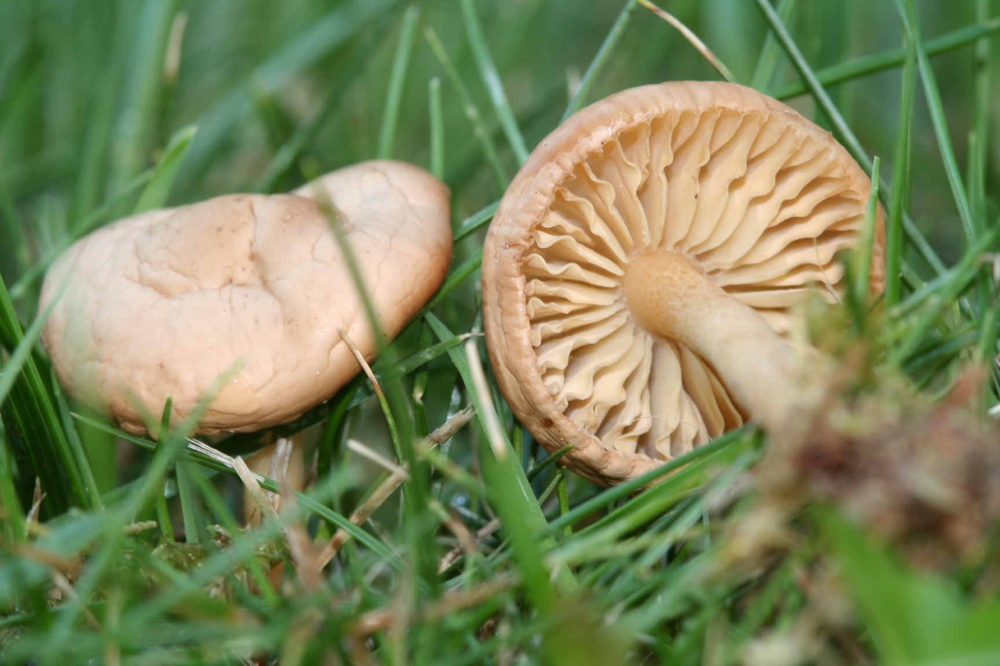
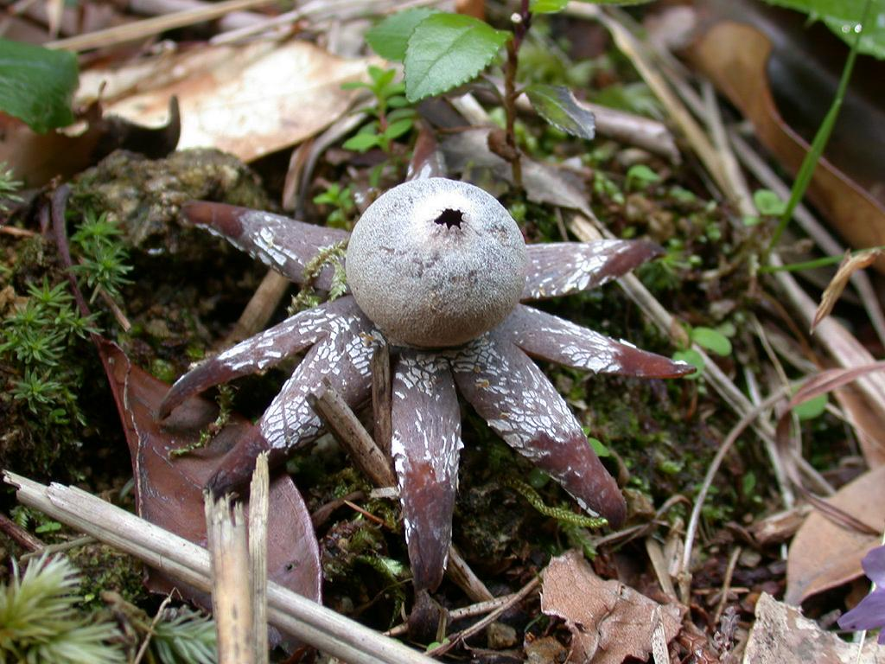
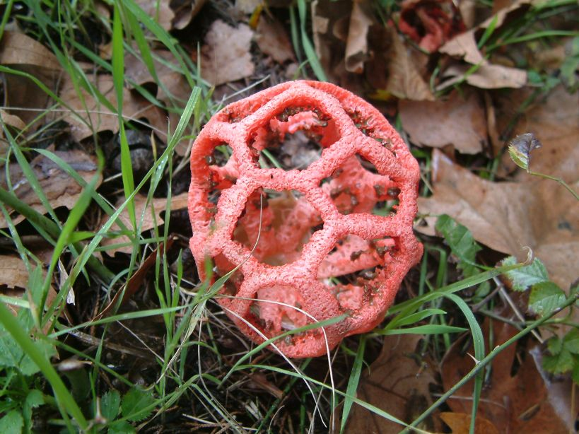
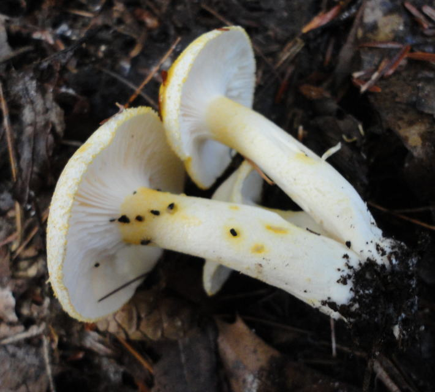
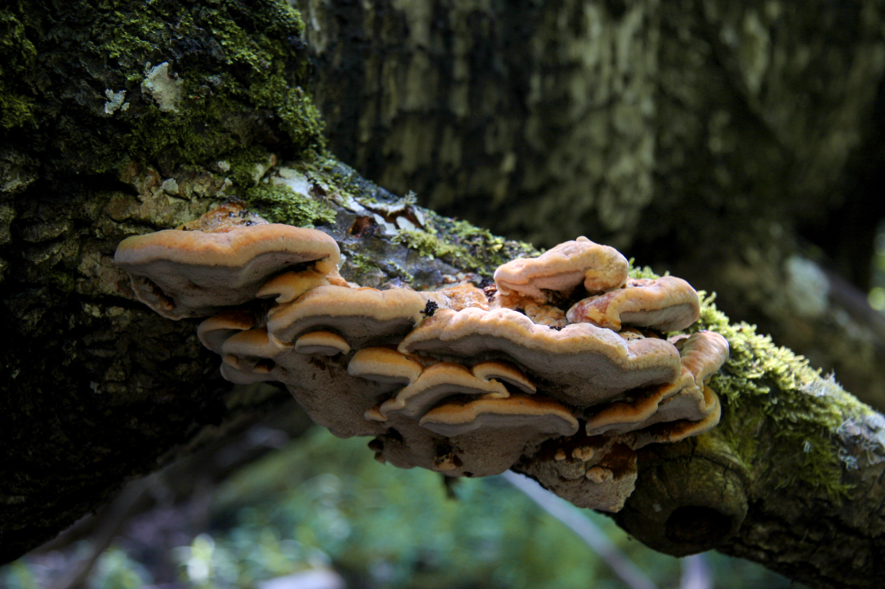

Seene liike on palju ja erivecaid.
Siin on paar tükki neid.
Aasnööbik
Aasnööbik on suurepärane söögiseen. 
Baromeeterseen
Baromeeterseen on mittesöödav. 
Clathrus ruber
Väga ebameeldiva lõhna tõttu peetakse teda mittesöödavaks. 
Ebe-limanutt
Söödav seen.
Ebe-limanutt esineb üle kogu põhjapoolkera. 
Haavapässik
Seent on leitud ka Eestist.
See seen on puuseen. 
Kui soovite näha veel seene liike vajutage pealkirjale või "siia" ja teid viiaks wikipedia lehele.